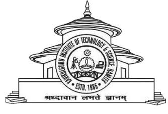

Kavikulguru Institute of Technology and Science, Ramtek
Autonomous UGC
Community Engagement Program
Under the Guidance of
Anjali Narad Mam
M. Arch., Ph.D. persude
Assistant Professor, KITS Ramtek
Group Members
Achal Bihune
CT24095
Tanisha Meshram
CT24069
Anushka Nikam
CT24073
BHOJAPUR GRAMPANCHAYAT
The villagers of Bhojapur have a great opportunity to benifit from various government schemes available for their welfare. With proper information and guidance, they can easily apply and make the best use to these schemes to improve their life.
Solution
To solve this issue, we have developed a dedicated website that provides details of all major schemes in English and Marathi, along with direct application links, so that villagers can easily understand the schemes and apply without difficulty.
Click on any scheme to learn more about its purpose and how to apply.